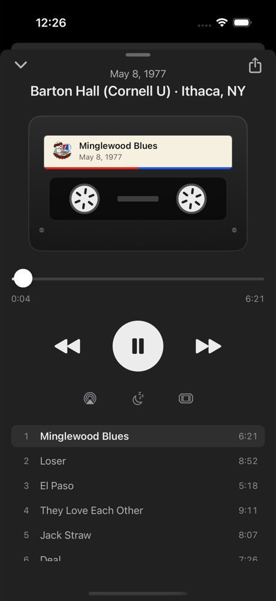
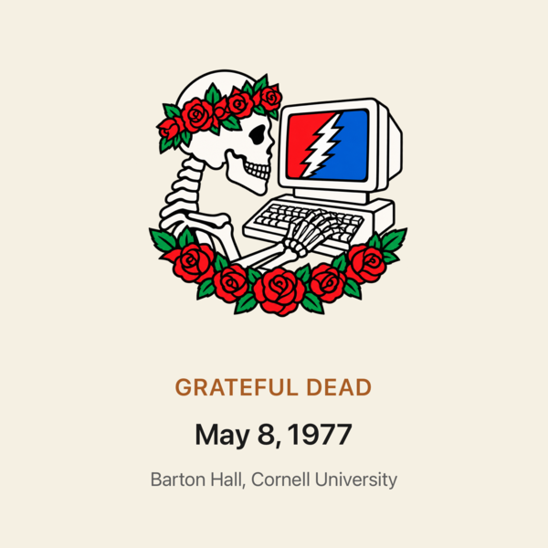
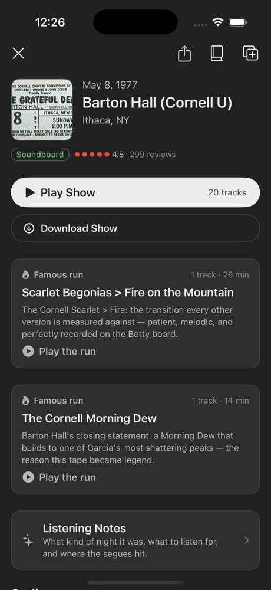

Nethead
First generation, straight from the source.
You know how it goes. Somebody says “man, you gotta hear 5/8/77” and suddenly it’s 3am, you’re six shows deep, and Jerry is peeling the paint off some field house in 1974.
The Internet Archive holds thousands of tapes — auds, boards, matrixes, thirty years of shows — and the only map has ever been the heads in the comment section. Nethead puts one of those heads in your pocket. The app hosts no music. It just knows the road. (Why “Nethead”? That’s a 1982 story.)


tonight’s show ✦ the constellation ✦ the head riding shotgun
The Rundown
Everything it does, no fluff.
Ask the Universe
“Mellow ’73 for a rainy Sunday.” “Hottest Scarlet>Fire of the eighties.” “Five hour drive — build me a second set that never lands.” Ask it like you’d ask a head in the lot. Plain English in, real tapes out. Every answer points at a real tape with a real setlist. No made-up shows, ever.
Liner notes for every night
Open any night and get the story: why this one matters, which source to spin, where the X-factor kicks in — with the real taper and head reviews right there under the setlist. Their ratings pick the best tape of the night, the way it’s always been done, just faster.
Like a friend who keeps taping things for you
Anniversaries, tour seasons, songs rising out of your own listening — smart shelves refresh through the day. Pin one and it’s yours to keep and edit.
Scarlet > Fire, on its own
The unit of listening was never the whole show. It was the run — the Scarlet > Fire, the Help > Slip > Franklin’s, the Dark Star that wouldn’t end. Nethead finds them inside every setlist, tells you how long they go, and plays them straight, gapless, the way the band played them. Home opens on tonight’s shelf of runs; play one or stitch them all.
Roll your own
Any tune from any show, in the order you want it — the ’77 Loser next to the ’72 one. Long-press a track to start a mix, and if two of your picks were a real segue pair, Nethead notices and offers to put them back together.
From ’68 weirdness to the MIDI years
Primal Dead. Europe ’72. The ’77 peak. Guided trips through the tapes, show by show, with the context the liner notes never gave you. (Respect the MIDI years.)
Long Strange Trip
Guided trips through the tapes, one night at a time.
The Gateway
Seven nights that turn the curious into Deadheads.
The Evolution of Dark Star
One song, twenty years, and the whole story of the band inside it.
Europe ’72 Crash Course
Five nights across the water with the hottest band the Dead ever were.
May ’77
The tour that perfectionists call perfect, one night at a time.
The Rise of Brent
How the new kid on keys became the beating heart of the eighties band.
The Wall of Sound
1974: the biggest PA ever built, and the band that burned out gloriously behind it.
The Tape Deck
It was never an “audio player.” It was always a deck.

Reels turn while the tape rolls. Background audio, lock-screen controls, gapless queues so the segues hold, scrub anywhere, a sleep timer for the drive home — streaming straight from archive.org, with nothing stored. Or download a show and take it where there are no bars.
And every show presses its own sleeve: on your lock screen and in the car, the night you’re spinning shows up as its own cover — the skull, the date, the room.

Two Ways to Ride
No account required. No ads, no trackers, nobody selling your trip diary.
Get on the Bus
Tap one button and everything works: the runs, Ask the Universe, listening notes, the trips, tonight’s pick, and the AI brain itself, free. Off the grid, the built-in knowledge base of essential shows, song histories, and eras takes over. Your listening stays on your device.
Take It With You
Your shelves and journal back up to your own iCloud and follow you to the next phone — private to your Apple ID, unreadable by anyone else, including us.
It Reads the Comment Section
The real map to the archive was never a database. It was the heads.
For twenty years, picking a tape has meant scrolling the reviews under every show — tapers talking mic placement and gen counts, heads naming the exact minute the X-factor arrives, somebody who was on the floor that night settling the argument. Thousands of shows, hundreds of thousands of words of inherited wisdom.
Nethead reads all of it. Every rating, every source note, every review on every tape feeds the listening notes. When it tells you which Cornell source to trust or why 2/13/70 gets whispered about, it isn’t guessing — it’s channeling the tapers and heads who were there, and it shows you their actual words right on the show page.
